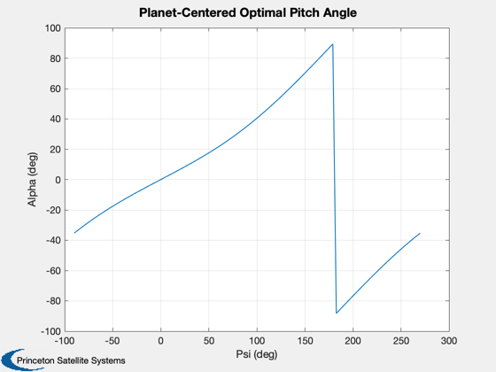
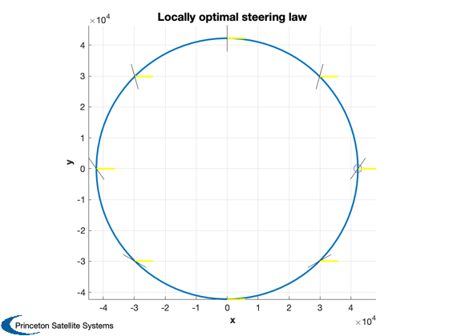
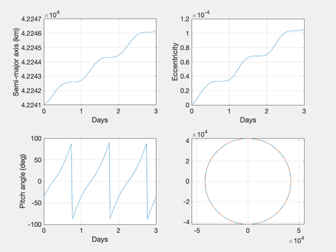
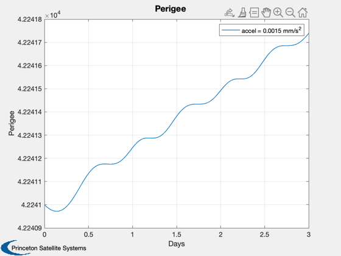
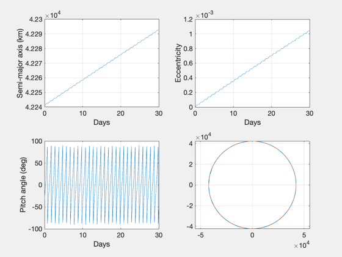
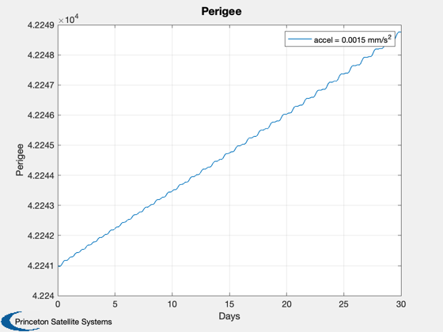

Simulate a geocentric locally optimal trajectory using the control laws
developed in McInnes to maximize the increase in orbital energy and
replicate Fig. 4.31 and 4.32 from the reference.
Demonstrates PlanetOptimalTraj and GeoOptimalMission.
This demo will first plot the optimal pitch angle as a function of flight
path angle. This will also be shown superimposed on a circular orbit.
Then the trajectory is simulated for 3 and 30 days and the resulting
spirals are plotted.
Since version 7.
------------------------------------------------------------------------
Reference: Colin R. McInnes, "Solar Sailing: Technology, Dynamics and Mission
Applications", Springer Praxis, London, 1999, pp. 156-158,
Sec. 4.4.2.3, "Locally Optimal Steering - Planet-Centered Orbits"
------------------------------------------------------------------------
See also Plot2D, Plot3D, OrbRate, RVFromKepler, SunV1,
ConeClockPatches, PlanetOptimalTraj, GeoOptimalMission
------------------------------------------------------------------------
Contents
Initial conditions
el0 = [42241;0*pi/180;0;0;0;0];
jD0 = 2454180.5367;
Test the law in an orbit
uS = SunV1( jD0 );
[rO,vO] = RVFromKepler(el0,[]);
[alphaStar, psi] = PlanetOptimalTraj( 1, rO, vO, uS );
Plot2D(unwrap(psi)*180/pi,alphaStar*180/pi,'Psi (deg)','Alpha (deg)','Planet-Centered Optimal Pitch Angle')
nu = linspace(0,2*pi,9);
[rP,vP] = RVFromKepler(el0,nu/OrbRate(el0(1)));
alphaS = PlanetOptimalTraj( 1, rP, vP, uS );
h = Plot3D(rO,[],[],[],'Locally optimal steering law'); hold on;
plot3(rO(1),rO(2),rO(3),'bo','markersize',10)
ConeClockPatches(alphaS,zeros(size(alphaS)),rP,vP,uS,2,h)
axis equal
view(0,90)
 
Replicate reference plots for spiral out of GEO
nDays = 3;
GeoOptimalMission( el0, jD0, nDays );
nDays = 30;
GeoOptimalMission( el0, jD0, nDays );
Elapsed time is 0.103527 seconds.
Elapsed time is 0.393426 seconds.
   